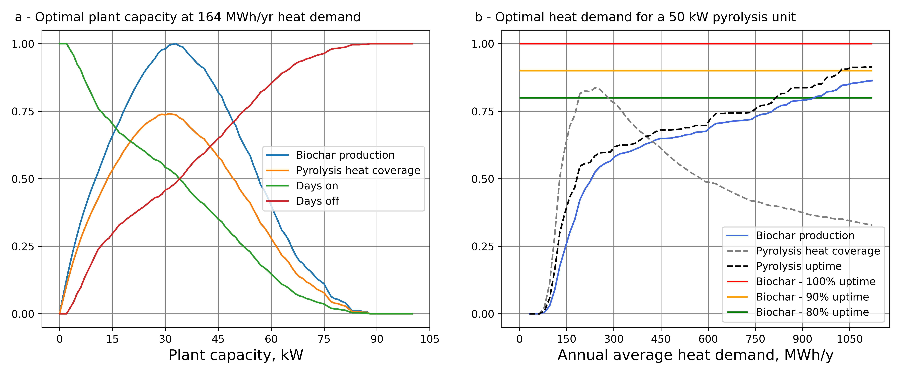

When biochar is in focus, the co-products are the pyrolysis oil and gases.
In many commercial reactors, today, these products are combusted directly and a fraction of the released heat is used for sustainaing the pyrolysis reaction, drying the incoming biomass, and eventually, any excess heat can be recovered for space heating. In some cases, steam can be produced or a turbine can be added to convert thermal energy to electricity.
More advanced reactors can include a post-treatment step to modify the properties of the gases and oil. In these cases, the new chemicals obtained can be stored and later used as liquid fuel or material .
For environmental systems analysis, a key question regarding the use of co-products is to identify equivalent products on the markets, i.e. products with similar properties that they can substitute.
Pyrolysis oil & gas valorised as …
Heat & power
Heat and power generation is the most readily available. Power generation is usually only economically interesting for larger plants, due to the costs associated with turbines. The dozen of plants available, in 2021, in Sweden all valorise the pyrolysis gas and oil as heat.
Generating usable heat from the pyrolysis oil and gas is commonly implemented by adding to the pyrolysis plant, the following components: a gas burner, a combustion chamber, and a heat exchanger. Post-combustion flue gases can also go through an air filtering system before being released at the stack.
Note that distinctions can be made even within a product category such as “heat”. Across the case studies, we encountered heat as:
District heat in Stockholm district heating network (Stockholn case study)
Space heating for farm premises & greenhouses (Lindeborgs case study)
Cooking energy (gasifier cookstoves in Kenya)
Drying of grain or other crop
Liquid & gaseous biofuel
Production of liquid biofuel requires adding a condenser after the pyrolysis chamber. The pyrolysis oil can go through various upgrading processes, to improve its properties as a fuel.
The remaning non-condensable gases need to be burnt: this requires a gas burner and a combustion chamber. The heat released from the combustion of non-condensable gases will generally be able to support the pyrolysis reaction, with little excess heat available for other processes.
Worth noting is that the pyrolysis conditions, such as temperature, heating rate and residence time, can be adjusted to promote the production of oil.
Upgrade of pyrolysis oil to fuel quality is also suggested as further research in scenarios for straw valorisation in Denmark (Thomsen, T. P. (2021))
The production of gas fuel like methane has also been investigated. Through various catalytic processes, pyrolysis oil and gas can be converted to a gas mixture rich in methane, which after upgrading can be used as transportation fuel.
Some research in this area:
Ahmadi Moghaddam, E.; Ericsson, N.; Hansson, PA. et al. Exploring the potential for biomethane production by willow pyrolysis using life cycle assessment methodology. Energ Sustain Soc 9, 6 (2019). https://doi.org/10.1186/s13705-019-0189-0
Similar to liquid biofuel production, pyrolysis oil can be condensed and upgraded for use as chemical or material.
Examples of such pathways are rare today.
Most biochar certificates (e.g. EBC) require that the biochar co-products to be valorised.
Modelling pyrolysis co-product properties and usage
Predicting the exact composition and the qualities of pyrolysis oil and gases is not straightforward, and often requires actual experimentation or advanced chemistry models (e.g. Aspen).
However, simpler mass and energy balances have been developped for special cases. Here, we present two of these:
This model applies to the simple, yet most common, case where pyrolysis oil & gas are directly combusted after pyrolysis to generate heat. It was developped and used in the case studies of this research project.
Description:
The model applies to slow pyrolysis of biomass, with direct combustion of pyrolysis gas and oil. It is based on mass and energy balances. It can either represent a pyrolysis reactor sustained by electrical heating or by heat from the flue gases. Biomass drying and excess use as district heat is considered. An electrical efficiency can be assumed as well.
Disclaimer: the model has many input parameters, some of which are not independent (e.g. biochar yield and biochar energy content are correlated). Thus, the user must make consistent choices of parameter data for realistic results.
Model inputs:
Biomass properties: lower heating value, as received moisture content
Drying step: target biomass moisture content, specific heat for dryer, electricity consumption of drying fans, assumed fraction of drying heat recovered as district heat
Pyrolysis step: biochar yield, lower heating value of biochar, electricity input for pyrolysis heating (if electricity heated reactor), boiler heat efficiency, power-to-heat ratio (if a turbine is installed)
This second model is derived from the research article by Woolf and colleagues (2014) and further re-used by Tisserant and colleagues (2021). The model allows to calculate the biochar, bio-oil and gas composition from a slow pyrolysis process, based on statistic regression from various experiments.
In the original article from Woolf (2014), the authors then refine the pyrolysis products via several conversion pathways (e.g. Gas pathways: water-gas shift reaction to produce hydrogen; catalytic methanation of pyrolysis gas. Liquid fuel pathways: catalytic methanol synthesis, Ljungdahl-Wood pathway, Fischer-Tropsch synthesis.).
Here, only the pyrolysis part is descrbied.
Description:
Model limited to pyrolysis, in particular slow-pyrolysis. It excludes gasification.
Based on statistic regressions from literature data
Calculates yields and composition of biochar, pyrolysis gas and oil
Model inputs:
Pyrolysis temperature (e.g. 500°C)
Biomass lignin, ash, C, H, and O contents
Model outputs:
Mass yields of biochar, tar (oil and water) and syngas (as CO, H2, CH4, C2Hx, and CO2)
This section describes two concepts commonly encountered when studying biochar systems in various case studies.
Biochar production constrained by energy demand
Whenever biochar production is integrated to an energy system, the amount of biochar produced is constrained by the energy demand. In other words, the energy demand sets the potential for biochar production. This can have several implications on the biochar production levels, annual dynamics and future trends.
Annual biochar production levels can be lower than the theoretical production capacity of the installed reactor.
Biochar production dynamics follow the energy demand, with daily or seasonal variations.
Future biochar production potential is affected by changes in future energy demand, e.g. lower heating demand in a warming climate.
An important distinction should be made between small & large energy systems. A small energy system here describes a system where the main energy source is the pyrolysis (e.g. a farm) as opposed to large systems where dozens of plants are connected to supply the load (e.g. Stockholm district heating network):
Large energy system: introducing pyrolysis can be seen by energy utilities as a way to increase flexibility in the day-to-day operation of units, producing certain commodities at various rates following demand and prices. Also, in large system, pyrolysis plants can operate as base load plants with high operating times (e.g. 80% annual uptime).
Small energy system: there is less flexibility, as the pyrolysis may be the main source of energy, and its maximum production capacity is thereby often larger than the average annual load [unclear]
Case: a pioneer biochar project at Lindeborg’s farm
At the Lindeborg farm, back in 2017, a pyrolysis plant was installed for heating of premises and co-producing biochar. As back-up heating, the farm can rely on electrical heaters and a smaller air-to-water heat pump.
The farm heating demand varies daily with the weather. Over the service life of the pyrolysis unit (ca 25 years), heat demand will also be affected by changing climate patterns & possible developments at the farm (new buildings, greenhouses, grain drying).
Here, we estimated an average annual biochar production of 7 tonnes in current climate & heat demand conditions, while the pyrolysis plant had a maximum capacity of 25 tonnes per year (if operated continuously). This is typical for the dimensioning of small-scale heating systems where the heat load (in kW) shows high seasonal variations.
Alongside with our Lindeborgs case, we provided code to dimension a pyrolysis plant for farm heating in a given climate, so as to maximise pyrolysis uptime and biochar production. The code is available here.

Fig. Optimal sizing of pyrolysis plant in Nyköping’s climate
A relative energy penalty
Pyrolysis is sometimes defined as a partial combustion of the biomass. In other words, during pyrolysis a large part of the chemical energy contained in the biomass remains in the biochar. But during combustion, all the biomass energy is released. Therefore, pyrolysis systems generate less energy than combustion. This is the concept of energy penalty relative to conventional bioenergy technologies.
Case: garden waste in urban context
In several cities in Sweden, including Stockholm and Helsingborg, a fraction of the urban garden waste and industrial wood waste is valorised via incineration with energy recovery. Landfilling is forbidden by law 2001:1063.
In that context, diverting woody waste biomass from combustion plants to pyrolysis plants to produce biochar reduces the overall energy produced. If energy demand remains constant, additional fuel will be used. This additional fuel could well be non-waste biomass, i.e. primary biomass sourced from forests, and the overall biomass consumption would increase.
However, as noted in the Stockholm case, a newer plant may be more energy efficient than older units, partly mitigating the increase in biomass use.
The point is that, at the system level, there is little difference between: a) diverting woody waste from combustion to pyrolysis, and b) sourcing primary biomass for pyrolysis, in the context of woody waste already valorised via combustion.
In
LCA, several techniques can be applied to compare the environmental impacts of systems that produce different amounts of useful products. One of these techniques consists in expanding the boundaries of the studied system by defining an alternative mean of production for the useful co-products. In that way, whenever there is a difference in amount of products delivered, substitutions or system expansions are used to equalise productions and restore comparability.
Overall, this approach requires to identify equivalent products, also called substitute products (including cases of perfect/imperfect substitutes).
This technique is further elaborated in the module on reference and background system. The main recommendation is to select several alternative products, whenever possible, because they often lead to strong variation in the results. Rather than being interpreted as uncertainty, one can see see variations induced by choice of substitution as the fact that environmental performance depends on the overall context.
The climate impact of some common energy products
In comparative assessments of biochar technologies, choice of alternative energy sources is a main source of variability of climate impacts. Therefore, we compile here some orders of magnitude of climate emission factors for energy services.